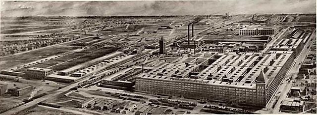

Experimento de Hawthorne
Es conocido como el experimento de Hawthorne a las practicas sobre el impacto de las condiciones de trabajo en los trabajadores que se estudiaron en la compañía "Western Electric Company" ubicada en chicago(Estados Unidos), una fabrica de equipos y componentes telefónicos entre los años de 1924 y 1932, en esa época desarrollaba una política de personal que daba importancia al bienestar de los operarios, manteniendo salarios satisfactorios y las mejores condiciones de trabajo, esto fue producido por Elton Mayo en conjunto con el ingeniero de la compañía y la universidad de Harvard. las conclusiones que obtuvo de este experimento fue que la misma conducta del ser humano ante el hecho de que los observaran su productividad mejoro considerablemente.

Causas de la realización del experimento de Hawthorne
este proyecto fue propuesto por Elton Mayo en 1923, con esta idea buscaba investigar y conocer cuales eran las causas por la baja de empleados y la mala producción de la empresa, el gerente de la fabrica se ofreció para que fuera el centro de la investigación ya que antes se habían intentado aplicar diferentes métodos, pero ninguno logro dar resultados por lo que Mayo inicio el experimento en Western Electric Company, en su prgrama de investigación hay cuatro fases.